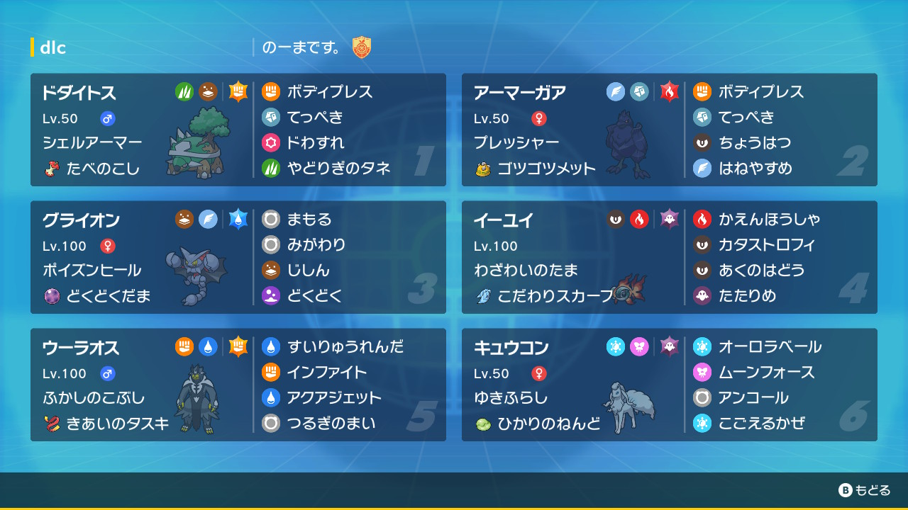

動画
パーティ画像

努力値
ドダイトス @ たべのこし
シェルアーマー / わんぱく
202(252)-114-143(36)-82-133(220)-76
アーマーガア @ ゴツゴツメット
プレッシャー / おくびょう
179(44)-85-157(252)-65-105-125(212)
グライオン @ どくどくだま
ポイズンヒール / わんぱく
179(228)-116(4)-162(20)-51-127(252)-116(4)
イーユイ @ こだわりスカーフ
わざわいのたま / おくびょう
130-78-100-187(252)-141(4)-167(252)
ウーラオス水 @ きあいのタスキ
ふかしのこぶし / いじっぱり
175-200(252)-121(4)-74-80-149(252)
キュウコンA @ ひかりのねんど
ゆきふらし / おだやか
180(252)-71-116(164)-102(4)-133(4)-140(84)
シェルアーマー / わんぱく
202(252)-114-143(36)-82-133(220)-76
アーマーガア @ ゴツゴツメット
プレッシャー / おくびょう
179(44)-85-157(252)-65-105-125(212)
グライオン @ どくどくだま
ポイズンヒール / わんぱく
179(228)-116(4)-162(20)-51-127(252)-116(4)
イーユイ @ こだわりスカーフ
わざわいのたま / おくびょう
130-78-100-187(252)-141(4)-167(252)
ウーラオス水 @ きあいのタスキ
ふかしのこぶし / いじっぱり
175-200(252)-121(4)-74-80-149(252)
キュウコンA @ ひかりのねんど
ゆきふらし / おだやか
180(252)-71-116(164)-102(4)-133(4)-140(84)